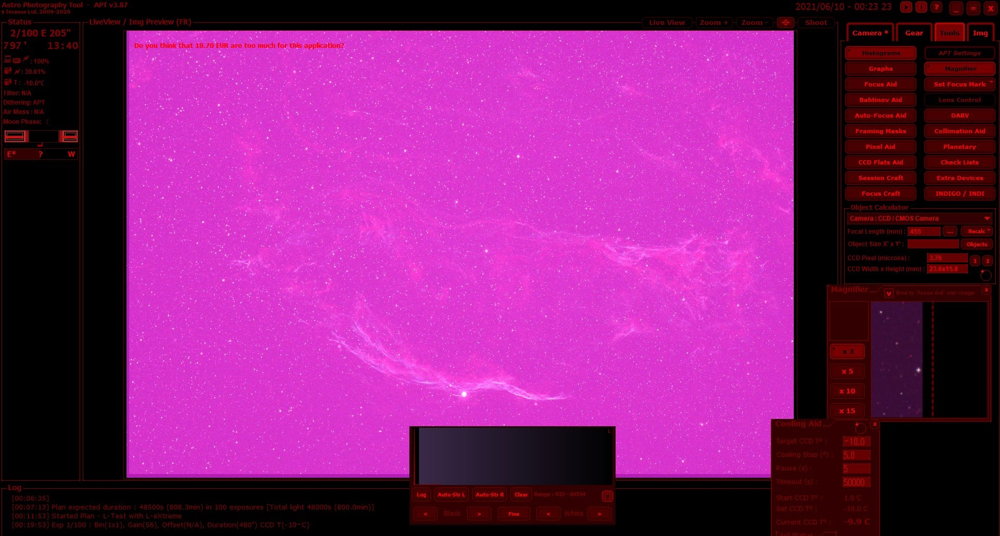
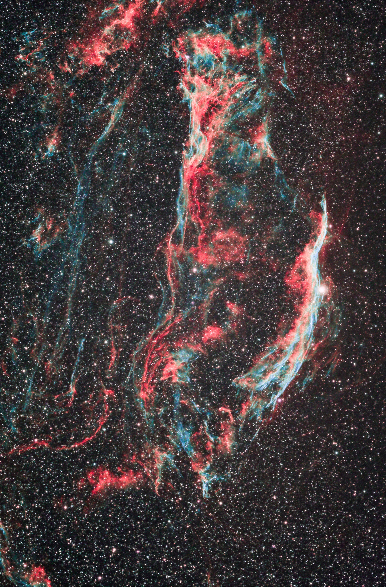
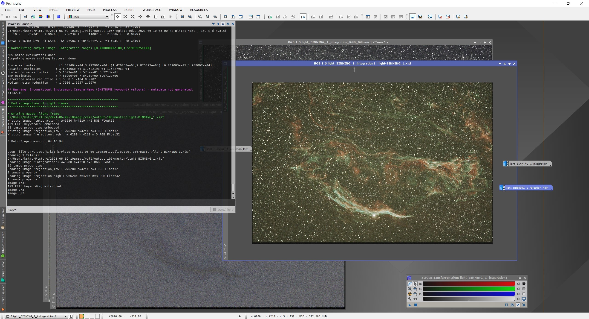
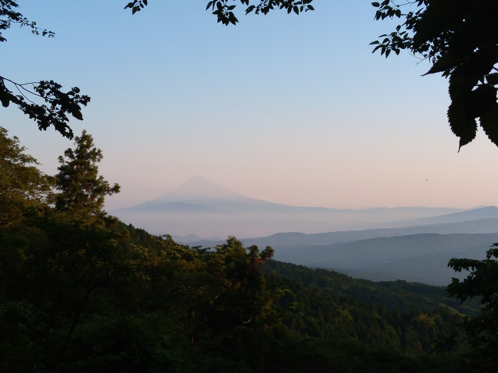

<!DOCTYPE html>
<html>

<head><meta name="generator" content="Hexo 3.8.0">
  <meta charset="utf-8">
  
    <title>
      
        【遠征記】2021年6月 天城（L-eXtreme デビュー） | 
            ほしよみ大学生のブログ
    </title>
    <meta name="viewport" content="width=device-width">
    <meta name="description" content="あいさつこんにちは，ようやく先月までの遠征記を書くことができました．先日も梅雨入り前最後の晴れ間を利用してソロで天城高原に行ってきました．今回は少し前に購入していた Optolong L-eXtreme filter のデビューが目的でした．">
<meta name="keywords" content="写真,天体写真,赤道儀,遠征記">
<meta property="og:type" content="article">
<meta property="og:title" content="【遠征記】2021年6月 天城（L-eXtreme デビュー）">
<meta property="og:url" content="http://dabokun.github.io/2021/06/11/00000055-2021-06-amagi/index.html">
<meta property="og:site_name" content="ほしよみ大学生のブログ">
<meta property="og:description" content="あいさつこんにちは，ようやく先月までの遠征記を書くことができました．先日も梅雨入り前最後の晴れ間を利用してソロで天城高原に行ってきました．今回は少し前に購入していた Optolong L-eXtreme filter のデビューが目的でした．">
<meta property="og:locale" content="ja">
<meta property="og:image" content="http://dabokun.github.io/2021/06/11/00000055-2021-06-amagi/card.jpg">
<meta property="og:updated_time" content="2021-06-16T07:58:27.534Z">
<meta name="twitter:card" content="summary_large_image">
<meta name="twitter:title" content="【遠征記】2021年6月 天城（L-eXtreme デビュー）">
<meta name="twitter:description" content="あいさつこんにちは，ようやく先月までの遠征記を書くことができました．先日も梅雨入り前最後の晴れ間を利用してソロで天城高原に行ってきました．今回は少し前に購入していた Optolong L-eXtreme filter のデビューが目的でした．">
<meta name="twitter:image" content="http://dabokun.github.io/2021/06/11/00000055-2021-06-amagi/card.jpg">
<meta name="twitter:creator" content="@astrodabo">
      
        <link rel="alternative" href="/atom.xml" title="ほしよみ大学生のブログ" type="application/atom+xml">
        
          
            <link rel="icon" href="/images/favicon.png">
            
              <link rel="stylesheet" href="/css/style.css">
                <!--[if lt IE 9]><script src="//html5shiv.googlecode.com/svn/trunk/html5.js"></script><![endif]-->
                
                  <script data-ad-client="ca-pub-1350688970555904" async src="https://pagead2.googlesyndication.com/pagead/js/adsbygoogle.js"></script>
</head></html>
<body>
  <div id="container">
    <div class="mobile-nav-panel">
	<i class="icon-reorder icon-large"></i>
</div>
<header id="header">
	<h1 class="blog-title">
		<a href="/">
			ほしよみ大学生のブログ
		</a>
	</h1>
	<nav class="nav">
		<ul>
			
				<li><a href="/">
						Home
					</a></li>
				
				<li><a href="/categories">
						Categories
					</a></li>
				
				<li><a href="/tags">
						Tags
					</a></li>
				
				<li><a href="/archives">
						Archives
					</a></li>
				
				<li><a href="/about">
						About
					</a></li>
				
				<li><a href="/work">
						Work
					</a></li>
				
					<li><a id="nav-search-btn" class="nav-icon" title="Search"></a></li>
					<li><a href="https://github.com/dabokun"></a>
					</li>
					<li><a href="https://twitter.com/astrodabo"></a></li>
					
						<li><a href="/atom.xml" id="nav-rss-link" class="nav-icon" title="RSS Feed"></a>
						</li>
						
		</ul>
	</nav>
	<div id="search-form-wrap">
		<form action="//google.com/search" method="get" accept-charset="UTF-8" class="search-form"><input type="search" name="q" class="search-form-input" placeholder="Search"><button type="submit" class="search-form-submit">&#xF002;</button><input type="hidden" name="sitesearch" value="http://dabokun.github.io"></form>
	</div>
</header>

    <div id="main">
      <article id="post-00000055-2021-06-amagi" class="post">
	<footer class="entry-meta-header">
		<span class="meta-elements date">
			<a href="/2021/06/11/00000055-2021-06-amagi/" class="article-date">
  <time datetime="2021-06-11T14:21:50.000Z" itemprop="datePublished">2021-06-11</time>
</a>
		</span>
		<span class="meta-elements author">astr0dab0</span>
		<div class="commentscount">
			
			<a href="http://dabokun.github.io/2021/06/11/00000055-2021-06-amagi/#disqus_thread" class="article-comment-link">Comments</a>
			
		</div>
	</footer>
	
	<header class="entry-header">
		
  
    <h1 class="article-title entry-title" itemprop="name">
      【遠征記】2021年6月 天城（L-eXtreme デビュー）
    </h1>
  

	</header>
	<div class="entry-content">
		
		
		<div id="toc" class="toc-article">
			<p class="toc-title">目次</p>
			<ol class="toc"><li class="toc-item toc-level-3"><a class="toc-link" href="#あいさつ"><span class="toc-number">1.</span> <span class="toc-text">あいさつ</span></a></li><li class="toc-item toc-level-3"><a class="toc-link" href="#天城へ"><span class="toc-number">2.</span> <span class="toc-text">天城へ</span></a><ol class="toc-child"><li class="toc-item toc-level-4"><a class="toc-link" href="#到着！ところが…"><span class="toc-number">2.1.</span> <span class="toc-text">到着！ところが…</span></a></li><li class="toc-item toc-level-4"><a class="toc-link" href="#L-eXtreme-デビュー"><span class="toc-number">2.2.</span> <span class="toc-text">L-eXtreme デビュー</span></a></li><li class="toc-item toc-level-4"><a class="toc-link" href="#タイムラプスも"><span class="toc-number">2.3.</span> <span class="toc-text">タイムラプスも</span></a></li></ol></li></ol>
		</div>
		
		<h3 id="あいさつ"><a href="#あいさつ" class="headerlink" title="あいさつ"></a>あいさつ</h3><p>こんにちは，ようやく先月までの遠征記を書くことができました．<br>先日も梅雨入り前最後の晴れ間を利用してソロで天城高原に行ってきました．<br>今回は少し前に購入していた Optolong L-eXtreme filter のデビューが目的でした．</p>
<a id="more"></a>
<h3 id="天城へ"><a href="#天城へ" class="headerlink" title="天城へ"></a>天城へ</h3><p>天気も上々だったので16時頃に自宅を出発，薄明終わりも遅いので海沿いの有料道路（真鶴道路，熱海ビーチライン）は使わずに天城へ直行．<br>途中遅めの昼ごはんを食べつつ行ったので3時間くらいかかりましたが，それでも20時前には駐車場に到着できました．<br>今回は道中鹿が目立ちました．暖かいので活発になっているのでしょうか．</p>
<h4 id="到着！ところが…"><a href="#到着！ところが…" class="headerlink" title="到着！ところが…"></a>到着！ところが…</h4><p>テキトーな駐車スペースに停めて機材を下ろし始めましたが，しばらくして</p>
<p>「あれ？もしかしてここ北極星見えない…？」</p>
<p>ということに気づきました．駐車場の一番下（奥）の列の北は高い木が生い茂っています．空はまだ少し明るかったので自信がなかったのですが，おそらく木の隙間からなんとか見えるはず！と思いそのまま赤道儀を組みました．<br>すると今度は極望の蓋がガッチガチにねじ込まれていて回してもうんともすんともいいません．10分ほど格闘してなんとか外せました．こういうときに非力な自分がつらい．<br>覗くと本当に木の隙間からギリギリ北極星が顔をのぞかせています，一安心．</p>
<p>今回狙う天体は網状星雲でしたが，まだ木の陰に隠れていたので上ってくるまでの間夕飯をいただき，撮影開始．</p>
<p>ところが！今回も冷却 CMOS が繋がりません！ｗ<br>行く前に PC との接続だけは確認したのですが，ソフトと連携してライブビュー撮影するということはしていませんでした．これが言ってしまえば今回の敗因．<br>PC はちょくちょくカメラを認識する（それでもちょくちょくなのだが…）のですが，普段使っているAstroPhotography Tool（APT）との連携が全くうまくいきません．<br>来る際に研究室の友人とのんきに通話していてスマホの通信量を食っていたのも大きな仇になりました．通信制限？で調べごとができないｗ<br>結局，1時間強格闘した後，安定版のドライバーをインストールしてなんとかカメラの制御には至りましたが，<a href="/2021/04/25/00000051-mgen-3-resolved/">MGEN との連携</a>がうまくいかず，ディザリング撮影ができませんでした．MGEN.APP経由でカメラも認識しているはずなのに，なぜかMGENとの連携が切れてもカメラは使えるという不思議な状態で撮影するハメに…ちなみに MGEN でのオートガイド自体はカメラとの連携を必要としないので，しっかりできている模様．．とりあえずディザは諦めて，縮緬ノイズが出たらやむなしと思って露光時間を稼ぐことに専念しました．<br>ここまでじゃじゃ馬だともうなんか諦めがつくというものです．流石にディザのテストまで直前にやるわけにはいかないですが，ライブビュー見られて安定して繋がるかは最低限チェックしてから遠征に出るように次回から心がけるしかないと思われます．</p>
<h4 id="L-eXtreme-デビュー"><a href="#L-eXtreme-デビュー" class="headerlink" title="L-eXtreme デビュー"></a>L-eXtreme デビュー</h4><p>てんやわんやあったのですが，本撮影でプレビュー画面に網状星雲が出てきたときはやはりテンションが上がります．<br>めっちゃ淡いところまで見えてますやん…（鼻血）<br>結局，合計で2時間程度の撮影となりました．Offset の値をきちんと設定しないまま撮影したり（しかもバグで値が FITS に記録されないという罠）などのトラブルは他にもありましたが，ナローバンドデビューはなんとか成功したと言って良いでしょう．  </p>
<p></p>
<p><div style="text-align: center;">
「NGC 6960 網状星雲 Veil Nebula」<br>
2021年6月10日 0時19分～ 静岡県 天城高原にて<br>
FSQ-85EDP + フラットナー1.01X F5.4<br>
QHY268C + Optolong L-eXtreme filter<br>
Gain 56/Offset 76/-10℃/480s*6<br>
Gain 56/Offset 106/-10℃/480s*10<br>
Total: 128min<br>
タカハシ EM-11 Temma2 Jr. + MGEN-3<br>
Adobe Lightroom CC / Photoshop CC / PixInsight<br><br>
</div><br>いつかこういう網状撮ってみたい～と思っていたようなものに仕上がったのでとても満足です．<br>今回は大部分の処理をPixInsight でやってみました．PCC も ArcsinhStretch もある程度うまくいってくれた感じがあります．前回と違って星を小さく処理も少しかけてみています．<br>ArcsinhStretch は正直赤が鮮やかになりすぎてしまう感じがあります．．これは好みの問題ですが…．<br>BPP までを終えたところです．Integration が終わって STF を適用して星雲がめちゃめちゃ見えた瞬間が一番気持ちがいい（至言）．<br>キャリブレーションは結構（特にライトダークは Offset 106 のものを3枚現地で撮って当ててるだけ）テキトーです．ちゃんとやれば結果は向上するのかな．<br>今後やってみたいと思います．</p>
<h4 id="タイムラプスも"><a href="#タイムラプスも" class="headerlink" title="タイムラプスも"></a>タイムラプスも</h4><p>今回も撮影風景を撮っておきました．現地には <a href="https://twitter.com/Mazic_tell_Arts" target="_blank" rel="noopener">takashi さん</a>もいらしていたので1時過ぎから薄明開始くらいまで少しお話させていただきました．</p>
<p><video src="timelaps.mp4" width="720" height="720" controls></video>takashi さんも写ってらっしゃいます（なんか自分だけ座って撮影作業してる図が申し訳ないな…）．</p>
<p>それから今回撮った自撮り．結構気に入りました．</p>
<p>夜中，上の駐車場から若そうな人たちの話し声が聞こえたので話しかけてみたらどこかの天文部の方でした．この晴れ間を逃すまいといらしたそうで，皆さん考えることは同じようです．<br>朝になって，また上の駐車場にいた（別の）若い人たちにその天文部の人たちと間違えて話しかけてしまったのですが，どうやら星見はあまりやったことがないらしく，わざわざ下の駐車場にいた僕のところまでやってきて機材について色々と聞いてくれました．ウイルス禍の中でもなるべく人に迷惑をかけない形で同世代の人が活発に天文活動したり，星見に興味をもってくれているということがわかった嬉しい一日でした．</p>
<p>梅雨明けはいっぱい星見したいのでたくさん晴れてください（祈願）．<br>それでは！</p>

		
	</div>
	<footer class="article-footer">
		<a href="https://twitter.com/intent/tweet?text=%E3%80%90%E9%81%A0%E5%BE%81%E8%A8%98%E3%80%912021%E5%B9%B46%E6%9C%88%20%E5%A4%A9%E5%9F%8E%EF%BC%88L-eXtreme%20%E3%83%87%E3%83%93%E3%83%A5%E3%83%BC%EF%BC%89｜%E3%81%BB%E3%81%97%E3%82%88%E3%81%BF%E5%A4%A7%E5%AD%A6%E7%94%9F%E3%81%AE%E3%83%96%E3%83%AD%E3%82%B0&url=http://dabokun.github.io/2021/06/11/00000055-2021-06-amagi/" class="twitter-share-button" target="_blank" title="Twitter"></a>
		<script async src="https://platform.twitter.com/widgets.js" charset="utf-8"></script>

		<div id="fb-root"></div>
		<script async defer crossorigin="anonymous" src="https://connect.facebook.net/ja_JP/sdk.js#xfbml=1&version=v4.0"></script>
		<div class="fb-share-button" data-href="http://dabokun.github.io/2021/06/11/00000055-2021-06-amagi/" data-layout="button_count" data-size="small"><a target="_blank" href="https://www.facebook.com/sharer/sharer.php?u=https%3A%2F%2Fdabokun.github.io%2F&amp;src=sdkpreparse" class="fb-xfbml-parse-ignore">シェア</a></div>
	</footer>
	<footer class="entry-footer">
		<div class="entry-meta-footer">
			<span class="category">
				
  <div class="article-category">
    <a class="article-category-link" href="/categories/expedition/">遠征記</a>
  </div>

			</span>
			<span class=" tags">
				
  <ul class="article-tag-list"><li class="article-tag-list-item"><a class="article-tag-list-link" href="/tags/photography/">写真</a></li><li class="article-tag-list-item"><a class="article-tag-list-link" href="/tags/astrophotography/">天体写真</a></li><li class="article-tag-list-item"><a class="article-tag-list-link" href="/tags/mount/">赤道儀</a></li><li class="article-tag-list-item"><a class="article-tag-list-link" href="/tags/expedition/">遠征記</a></li></ul>

			</span>
		</div>
	</footer>
	
	
<nav id="article-nav">
  
    <a href="/2021/06/16/00000056-aflak-improc-03/" id="article-nav-newer" class="article-nav-link-wrap">
      <strong class="article-nav-caption">Newer</strong>
      <div class="article-nav-title">
        
          ArcsinhStretch について調べて，追実装してみる
        
      </div>
    </a>
  
  
    <a href="/2021/06/11/00000054-2021-05-utsukushi/" id="article-nav-older" class="article-nav-link-wrap">
      <strong class="article-nav-caption">Older</strong>
      <div class="article-nav-title">
        
          【遠征記】2021年5月 美ヶ原
        
      </div>
    </a>
  
</nav>

	
</article>


<section id="comments">
	<div id="disqus_thread">
		<noscript>Please enable JavaScript to view the <a href="//disqus.com/?ref_noscript">comments powered by
				Disqus.</a></noscript>
	</div>
</section>

    </div>
    <div class="mb-search">
  <form action="//google.com/search" method="get" accept-charset="utf-8">
    <input type="search" name="q" results="0" placeholder="Search">
    <input type="hidden" name="q" value="site:dabokun.github.io">
  </form>
</div>
<footer id="footer">
	<h1 class="footer-blog-title">
		<a href="/">ほしよみ大学生のブログ</a>
	</h1>
	<span class="copyright">
		&copy; 2023 astr0dab0<br>
		Modify from <a href="http://sanographix.github.io/tumblr/apollo/" target="_blank">Apollo</a> theme, designed by <a href="http://www.sanographix.net/" target="_blank">SANOGRAPHIX.NET</a><br>
		Powered by <a href="http://hexo.io/" target="_blank">Hexo</a>
	</span>
</footer>
    
<script>
  var disqus_shortname = 'astr0dab0';
  
  var disqus_url = 'http://dabokun.github.io/2021/06/11/00000055-2021-06-amagi/';
  
  (function(){
    var dsq = document.createElement('script');
    dsq.type = 'text/javascript';
    dsq.async = true;
    dsq.src = '//go.disqus.com/embed.js';
    (document.getElementsByTagName('head')[0] || document.getElementsByTagName('body')[0]).appendChild(dsq);
  })();
</script>


<script src="//ajax.googleapis.com/ajax/libs/jquery/2.0.3/jquery.min.js"></script>


<link rel="stylesheet" href="/fancybox/jquery.fancybox.css" media="screen" type="text/css">
<script src="/fancybox/jquery.fancybox.pack.js"></script>


<script src="/js/script.js"></script>
  </div>
</body>
</html>